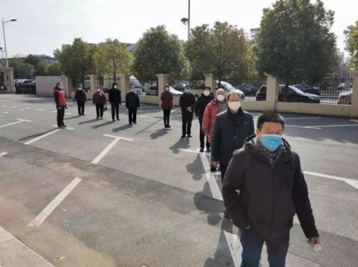
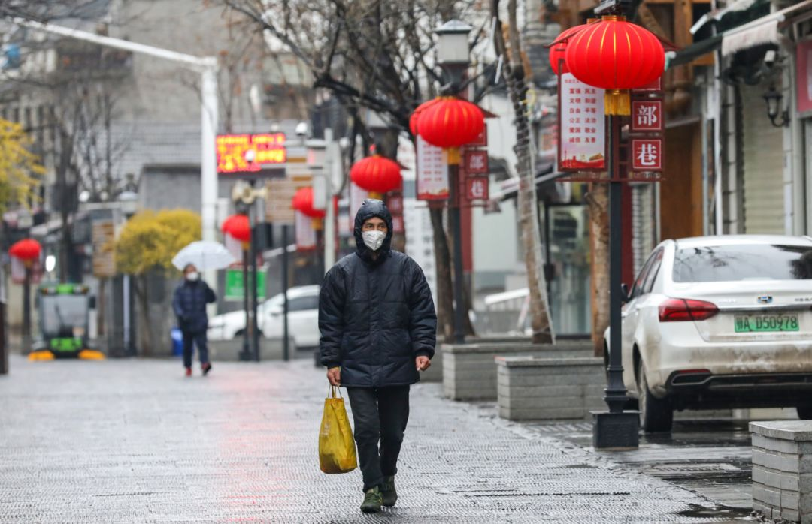

“每只利润四五厘”，中国口罩产业17年沉浮 | 棱镜
原文链接 备份链接 作者 | 王卓铭 编辑 | 张庆宁 出品 | 棱镜·腾讯小满工作室 欢迎下载腾讯新闻APP，阅读更多优质资讯 1月31日21:00，湖北省新型肺炎防控指挥部召开第九场新闻发布会。 武汉市委副书记、市长周先旺表示：“到 …

1月29日，国家工信部有关负责人介绍，中国的口罩年产量占全球约50%，最大产能达每天2000多万只。根据口罩业内人士的估计，中国的实际产能肯定远超这个数字，但特殊时期，产能能否真正释放，又如何调配，都是巨大难题。
记者 | 王海燕
口罩生产难题：人工和原料
▲▲▲
大概是元旦前后吧，李刚就感受到了口罩需求的微小波动，药店和医院的用量都大了。但冬天本就是口罩销售旺季，加上每年都有流感高峰，李刚当时并未在意。李刚是浙江一家医疗用品公司的管理者，他所在的公司，主要生产各类伤口敷料和护理产品，也生产医用口罩。
李刚所在的公司，每年春季放假时间都在10天左右，公司很多外地工人，因此，春节前四五天开始，外地工人就陆续走了。1月20日，钟南山在央视接受采访公布武汉新冠肺炎的情况时，李刚所在的工厂刚刚彻底停产。
没两天，厂里就接到了政府的通知，要求复产，李刚他们赶紧把一些本地员工召回来，1月23日重新开工。但召集工人并不容易，一开始，疫情还不严重，很多工人都不理解，想在家过年；等到疫情变得越来越严重，工人愿意返工时，很多地方又封了路，出不来了。虽然招到一些新的工人，但截止目前，这家工厂的口罩产能水平，依然只能勉强达到平时的水平，也就是日产外科口罩近50万个。

和李刚一样，仙桃的口罩厂管理者陈力也没有接收到疫情的信号。仙桃离武汉100多公里，是国内有名的一次性无纺布口罩代工基地，这里的厂家，大多在1月17日之前就放假了，甚至比往年更早一些，原因是一场大雪后，当地的物流货运早早停了。
陈力在元旦过后还接到过一批来自某天猫店的大订单，收货目的地显示，这批货部分是销往香港的。当时陈力挺奇怪，但也没想太多，顺利交付后就安心放假了。疫情爆发后，陈力一直观望到1月26日才开工。
和李刚不一样，陈力的员工大多来自仙桃当地，复工比较容易，他忧虑的是原料储备少，只够用几天，而他的喷绒布原料供应商，老板和工程师都是武汉人，因为疑似感染，双双被隔离在家了，无法开工。和口罩生产商不一样，原料供应商通常都是接到订单后才生产，几乎一点库存也没有。

陈力所在的工厂，设备是全自动化的，一线工人30来个，如果满负荷生产，日产量约在100万个左右。因此，对陈力来说，原料的短缺甚至比工人更致命。原料短缺，远在浙江的李刚也感受到了。李刚所在公司主要生产的是医用外科口罩，看起来简单，但需要的原材料品种很多，包括无纺布、熔喷布、滤材、耳带，甚至包装的纸箱，如今都成了问题。
如果不是赶上春节这个特殊时间，口罩的生产并不是难题。以业内有名的稳健医疗为例，在满负荷生产的情况下，稳健从2019年12日20到1月26日晚，就向市场供应了口罩1.089亿只，相当于每天的产量达到280多万只。
稳健的稳定供应，得益于工厂未曾停工。该公司一名员工告诉我，稳健有很多医院客户，大约是2020年的头几天，武汉市场就出现了大量需求，开始倾斜性供货。事实上，根据本刊采访，武汉各大医院的发热门诊，在1月10日左右，就出现了爆满。也正是在1月10日，稳健公司开始动员黄冈的口罩车间春节不休假，加班生产各类口罩，生产线甚至24小时不休息。

某地排队买口罩现场
1月29日，国家工信部有关负责人介绍，中国的口罩年产量占全球约50%，最大产能达每天2000多万只。但在业内人士看来，中国的口罩实际产能肯定远大于这个数字。中国纺织品商业协会安全健康防护用品委员会会长雷利民在接受媒体采访时也认为，随着工人、原料和物流到位，加上新的产能投入，到2月底，中国的口罩日均产能，有望达到1.8亿只，其中N95口罩约3500万只。但他同时认为，目前企业生产状况极复杂，1.8亿产能最后能否达到，还取决于很多外部因素。
高企的成本
▲▲▲
严格来说，雷利民说的N95口罩，在中国只是一种口头说法，通常用来指代医用防护口罩，部分达到标准的海外口罩、KN型口罩。和N95口罩对应的，是一次性的医用平面口罩，分两种，普通医护口罩和医用外科口罩。两者都要求过滤细菌的效果超过95%，但外科口罩在防水和防颗粒方面的检测标准更高。
通常来说，即使在有资质的厂家，N95的产量也并不高，原因是这种口罩材料密度高，密闭性好，佩戴有规范，一般只在医院的一些特殊科室使用，都是固定渠道销售。海军军医大学长征医院感染科主任医师缪晓辉也告诉我，“N95一定不是给普通人准备的”。**在他看来，普通的健康人群，除了在人群密集场合，并没有戴口罩的必要，如果一定要戴口罩的话，建议使用一次性外科或护理口罩。
**

远征 摄
事实上，外科口罩既是目前消耗最大的产品，也是各大厂家的生产重点。但普通外科口罩的生产，涉及到资质和成本问题。来自仙桃的陈力告诉我，他们平时生产的三层一次性口罩，主要供应电子厂、食品厂等工厂车间，用于防飞沫，既外销，也出口。根据客户要求，他们采用的是和医用外科口罩同标准的无纺布、喷绒布和高效滤材，但缺少灭菌环节。
灭菌环节指的是，口罩生产为成品后，要整体打包放入消毒柜，用环氧乙烷多次灭菌。为了灭菌后含硫类物质能够挥发出来，新的细菌又无法进入，医用外科口罩必须使用一种纸塑材料进行特殊包装，这种外包装甚至比口罩本身的价格还要高。因此，如果严格遵循灭菌标准的话，成本会大幅上升。陈力的客户中，也有人要求严格灭菌，通常会单独定价。
灭菌后的产品，陈力曾经送去做过检测，能够达到医疗标准，但他们最后还是放弃了申请资质，原因是医疗器材售卖的资质壁垒高，他们没有渠道，只能通过中间代理商接触医院，而大多数医院采用的都是采购制，有严格的成本审核制度。**在有中间渠道的情况下，本来薄利的厂家，就更难赚钱了。
**
根据陈力的了解，当地很多有医疗资质的厂家，未必在生产产品，而没有资质的厂家，却很多都在代工做贴牌，这种行业复杂性也加剧了产能释放的难度。

某电商平台上的口罩已全部售空
作为有资质的公司，李刚的公司在1月27日，向当地银行紧急贷款2000万，用以购买设备，扩大产能，主要就是用于生产医用外科口罩。李刚说，工厂目前已接受政府统一调配，价格与疫情前相当。作为上市公司，他们暂时还不想考虑利润和扩大产能的成本。
但这一举动，其它口罩企业很难模仿和跟随。口罩行业属于小商品制造，工艺简单，竞争门槛不高，利润只有10%左右，其整体产能，是靠众多中小型工厂聚沙成塔累积起来的，而一些中小型厂家已经开始感到生产困难。
吴皓月是湖北某县的一家口罩厂商，产品和陈力的工厂相似，成品和医用外科口罩使用同标准材料，但没有灭菌，平时偶尔也卖给当地的卫生院。1月20日，当地政府找到一些厂家，洽谈口罩调配问题，吴皓月是积极响应者之一。因此，春节期间，他的工厂一天也没有放假，一直在满负荷生产，产品都交由政府统一调配。截至目前，还没人跟他谈过价格，他自己也没谈，“他们拿去捐也行，卖也行，（垫资）几百万还在可接受范围内”。
与之相对应的是，吴皓月目前的生产成本是平时的3到5倍，“平时工人100多元一天，现在500元一天都找不到，技术方面的1000元一天都找不到，核心技术方面的，2000元一天都找不到人。”这意味着，吴皓月的工厂每天开支在二三十万。吴皓月在接到采访电话后，反复申明，不想实名出现在新闻里。他说，自己和工人已经超负荷连续工作10多天了，非常累，压力非常大，只希望疫情尽快结束。
根据2月2日工信部的公开信息，自1月21日以来，全国口罩产能，目前恢复率为60%，按照工信部此前的数据，这意味着，国内企业现在起码每天能够生产口罩1200万个。
物资统一调配
▲▲▲
随着口罩产能逐渐恢复，民间募捐团队则渐渐退出物资调配。2月1日晚，武汉人何圆圆在一个数百人的微信群里宣布，停止接受募捐。10天前的1月23日，何园园在朋友圈看到医院紧缺物资，便顺手联系了一个朋友。这个朋友在常州，认识一家医疗器械公司的老板，帮忙购买了1万5千个医用外科口罩。
这批物资的顺利对接让何园园大喜过望，迅速开通了一个微信群，组织起一个民间团队，专门为医院募捐和协调物资。何园园的团队里，有人募款，有人找货，还有人运输，何园园和另外四个人属于寻找货源的小组。
等真到了找货的时候，何园园才发现，第一次的成功纯属偶然。他们首先查找了具有医疗生产资质的厂家，发现主要集中在江苏和山东。1月24日、25日两天，何园园联系了数百个山东济宁的厂家，结果大多数无人接听，接听的厂家都说还没开工，要正月初八才开工，存货已经清空了。

远征 摄
1月26日左右，何园园了解到，济宁的一些厂家已经开工了，赶紧联系，但厂家的普遍反馈是，产品已被当地政府调用了，无法售卖给私人渠道。为了找货，何园园还添加了很多个微信群，只要看到有人有货，立马就联系。
最终，她只找到了两批N95口罩，一批400个，是她朋友从阿联酋人肉帮她背回来的。另一批是春节前就向仙桃一个厂家订购的，本来订的是3000个，但1月31日真正出货后，厂家说已经被政府调用了，无法兑现。何园园反复说服，厂家才想方设法她运出了2000个。
这批N95的口罩15元一个，是疫情爆发前的3倍，考虑到厂家成本上涨，何园园能接受这个价格。事实上，厂家最后愿意想办法运出货来，是因为何园园拿到了医院的接收文件，保证最快速度将口罩送达医院。这也是她能从厂家买到的最后一批货。**何园园后来算了算，为了拿到这两批货，她前后跟上百个人打过交道。
**

相比起来，来自北京的一个企业捐赠团队收获更小，这个团队的采购人员告诉我，从1月24日了解到医院物资告急以后，他们就开始联络药企和厂家，一共联系了全国77家口罩厂家，数十家经销商，但得到的答复都是，N95口罩已被政府接管，需要优先供给湖北，不对私人和企业出售。这和我采访的其它原料厂、口罩厂、国家背景的采购团队，得到的口径是一致的。
但截止目前，尚没有公开信息显示，全国的口罩在政府统一调配下，到底是如何分配和运输的。就在何园园停止募捐前不久，我在朋友圈里看到，武汉金银潭医院也开始向社会公开募集物资，募集的物资包括医用外科口罩、N95口罩、普通医用口罩、医用防护服、一次性手术衣、防护面罩、防冲击眼罩和一次性圆帽。
该院的一名医护人员告诉我，从1月31日起，他们进入一般污染区时，已经没有N95口罩可用。作为武汉市最早收治新冠肺炎患者的定点医院，金银潭医院收治的，通常都是确诊重症患者。此前，该院医护人员告诉我，因为面临的情况复杂，政府此前一直对他们优先供给。
（文中人物皆为化名）
作者档案

**王海燕
**
三联记者，比较喜欢采访，偶尔也喜欢写稿
26分钟前


三联生活周刊
个人微信公众号：解放路97号（jm-freetree）

⊙文章版权归《三联生活周刊》所有，欢迎转发到朋友圈，转载开白请联系后台。未经同意，严禁转载至网站、APP等。
嘉木木
微信扫一扫赞赏作者 赞赏
长按二维码向我转账
受苹果公司新规定影响，微信 iOS 版的赞赏功能被关闭，可通过二维码转账支持公众号。
文章已于修改
原文链接 备份链接 作者 | 王卓铭 编辑 | 张庆宁 出品 | 棱镜·腾讯小满工作室 欢迎下载腾讯新闻APP，阅读更多优质资讯 1月31日21:00，湖北省新型肺炎防控指挥部召开第九场新闻发布会。 武汉市委副书记、市长周先旺表示：“到 …
原文链接 备份链接 以下文章来源于网易财经 ，作者梁耀丹 出品|网易清流工作室 作者|梁耀丹 主编|赵妍 爆料邮箱： stoolpigeon@service.netease.com 假口罩在市场上蔓延。 多位试图通过实体药店、电商平 …
原文链接 备份链接 在疫情防控的持续压力下，口罩的供给，尤其是防疫一线的供给情况依然紧绷。这背后既有制约企业生产的原料问题，民众也存在过度追求N95等专业口罩的误区，更有人借机囤积居奇，乃至造假售假。 全文3748字，阅读约需5.5 …
原文链接 备份链接 《人物》记者向多位寻求捐赠的医护人员咨询，他们均表示，很多医院的医用外科口罩库存量大概在一个星期左右，「平常有时口罩也戴一天，如果不去视察病房，有的科室没有戴口罩的需求。」用得不多、存量少，脆弱的库存和供应系统很快被疫 …
原文链接 备份链接 *************▲************* 广州南站提着大包小波的乘客，其中大部分人佩戴上了口罩。（南方周末记者 翁洹/图) 全文共*3883*字，阅读大约需要8分钟 中国是世界最大的口罩生产国，最大产能可 …